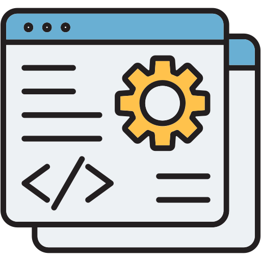

About Me
I’m a third-year B.Tech student specializing in Artificial Intelligence and Data Science, focused on building intelligent systems using machine learning, computer vision, and full-stack development. I work on developing AI-driven applications and systems that emphasize both technical depth and real-world usability.
Education
B.Tech, Artificial Intelligence and Data Science
Shiv Nadar University, Chennai
August 2023 – August 2027
CGPA: 8.59 (Semester I to Semester V)
Indian School Certificate Examination (12th)
Isha Home School, Coimbatore
June 2020 – May 2023
Percentage: 89.4%
Indian Certificate of Secondary Education Examination (10th)
Isha Home School, Coimbatore
June 2018 – May 2020
Percentage: 88.8%
Projects
Geospatial AI for Rural Infrastructure Mapping
Built an AI-powered geospatial analysis system to identify buildings, roads, and water bodies from high-resolution drone imagery for rural planning applications.
Developed an interactive Streamlit dashboard for data upload, preprocessing, and visualization. Integrated a CNN-based feature extraction model to generate overlays, maps, and statistical insights.
Tech: Python, Streamlit, GeoPandas, CNNs, PIL, MatplotlibAI-Based Video Frame Interpolation (RIFE Adaptation)
Adapted a deep learning-based frame interpolation model to process custom datasets using structured 12-frame sequences and triplet-based splitting.
Implemented preprocessing optimizations and CUDA-accelerated inference using PyTorch, and evaluated output quality using PSNR and SSIM metrics.
Tech: Python, PyTorch, OpenCV, NumPy, CUDAAdaptive Semantic Hint Generation System (Ongoing)
Designed an NLP-based system for generating adaptive hints in a word guessing game using semantic similarity and controlled output strategies.
Built a BERT-based similarity pipeline and an adaptive hint progression system with feedback memory to prevent repetition and improve hint quality.
Tech: Python, BERT, Scikit-learn, NumPyBodySync – Personalized Goal Tracking Platform
Developed a full-stack web application for tracking physical activity and maintaining consistency through structured progress monitoring.
Implemented authentication, database design, and dynamic UI updates for personalized user experiences.
Tech: HTML, CSS, JavaScript, MySQLOther Projects
Student Activity Management System
Built a web-based system for teachers to track student progress and plan activity-based learning workflows.
Word Sense Disambiguation
Determined context-based meanings of ambiguous words using NLP and WordNet.
Gesture-Controlled Flappy Bird
Controlled gameplay using hand gestures with MediaPipe and OpenCV.
Weather Dashboard
Displays real-time weather data using API integration.
iOS Games (Swift)
Developed Tic Tac Toe and Sudoku apps to learn iOS development.
Skills

Languages
Python, C++, Java, JavaScript, HTML, CSS, MySQL
Frameworks & Libraries
PyTorch, OpenCV, Scikit-learn, Streamlit, Node.js, Express
Domains
Artificial Intelligence & Machine Learning, Computer Vision, Natural Language Processing, Full Stack Development
Tools
Git, GitHub, VS Code, Unity, Unreal Engine, Xcode
Languages Spoken
English, Hindi and Gujarati (Native), Tamil, Spanish (A1)